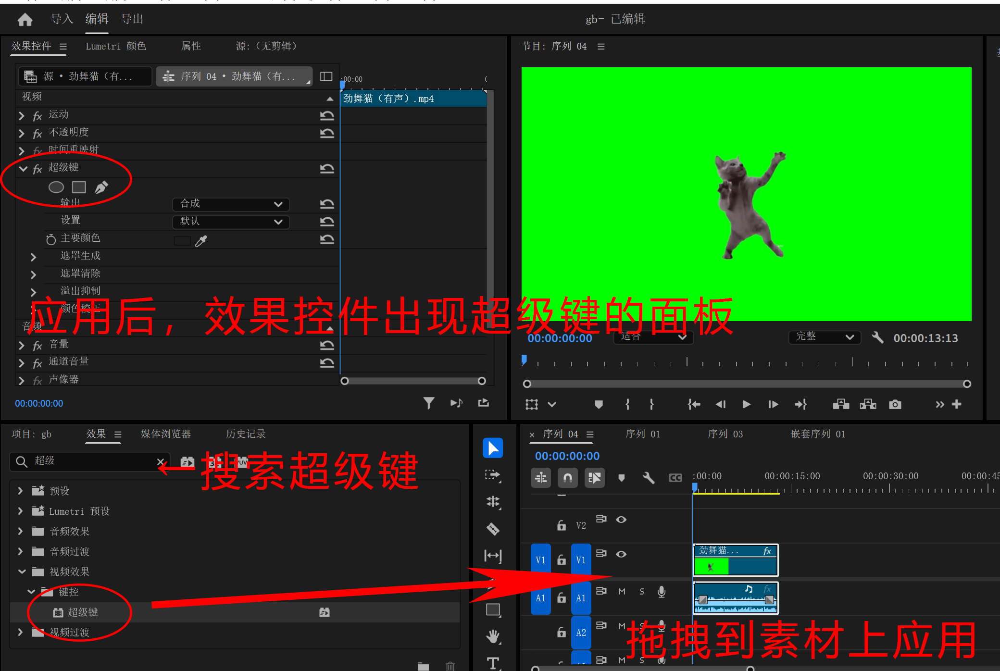
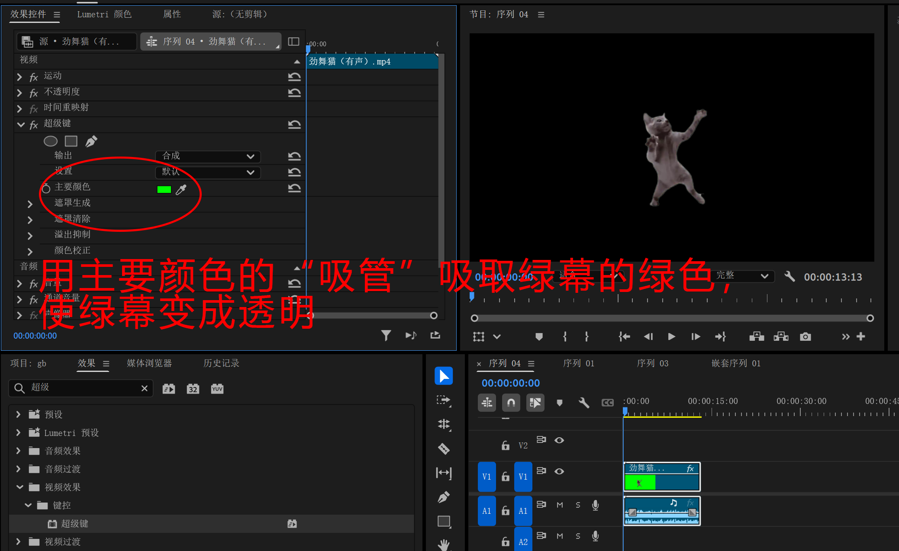
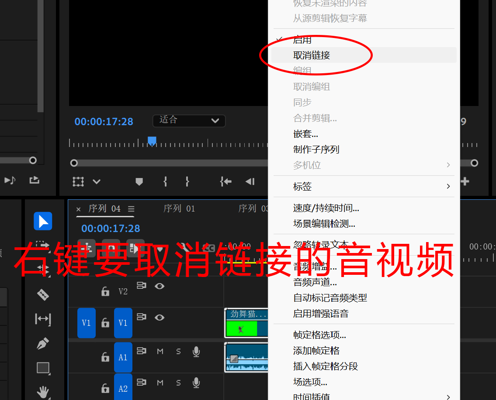

超级键
绿幕素材是已经扣好的素材，我们只需要去掉绿色背景就可以
置入绿幕素材，接着在效果中搜索“超级键”，拖动到素材上添加这个效果

“超级键”
在效果控件中找到超级键的面板，用“主要颜色”旁边的吸管吸取画面中绿幕的绿色，这是画面中的绿幕将变为透明，绿幕素材就扣好了

吸取绿色
网络上还可以找到各种蓝幕，紫幕素材等等，使用它们的原理和绿幕素材是一样的。不同颜色只是为了和抠出的主体内容拉开区分方便抠图处理
取消链接
当我们只需要视频素材而不需要和它们链接在一起的音频时，我们需要在右击菜单中“取消链接”，然后就单独删除它的音频轨道

取消链接